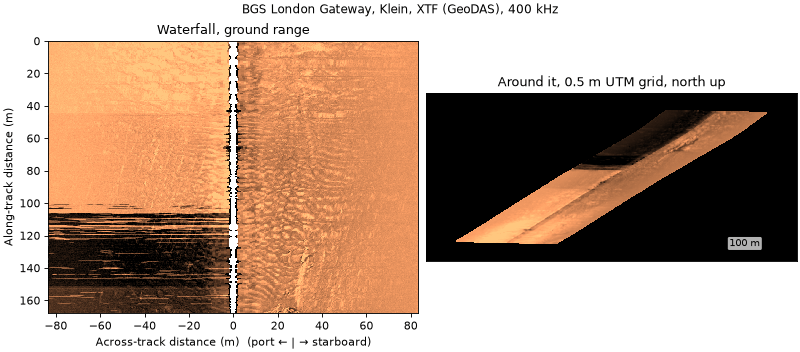
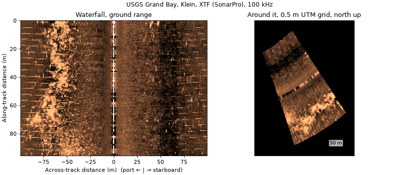
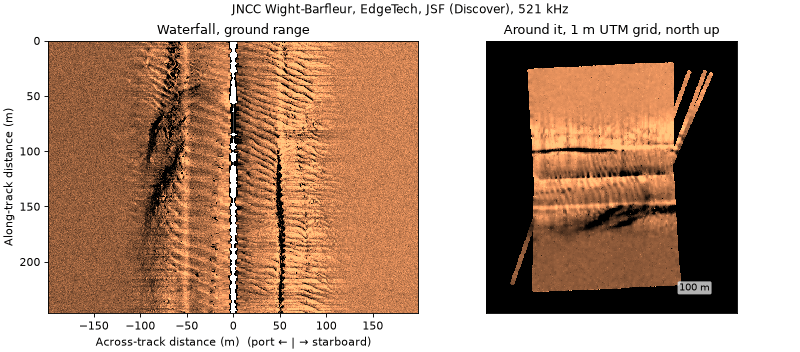
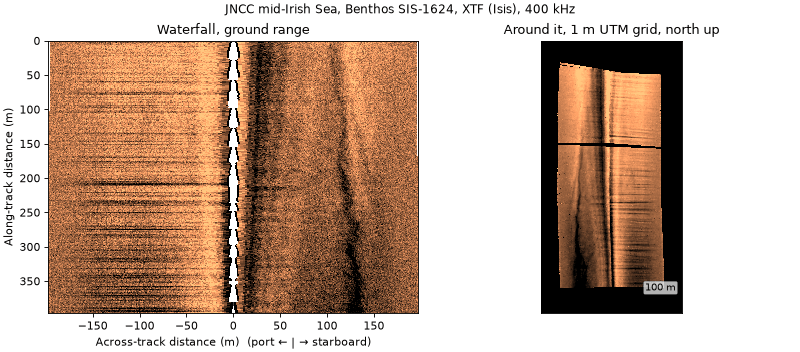
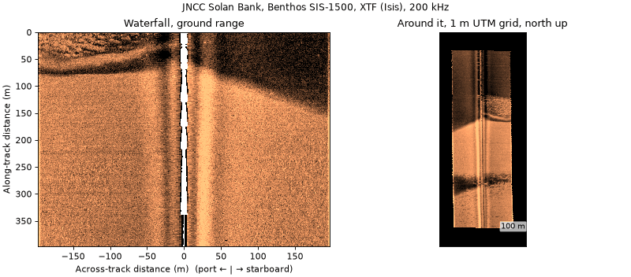
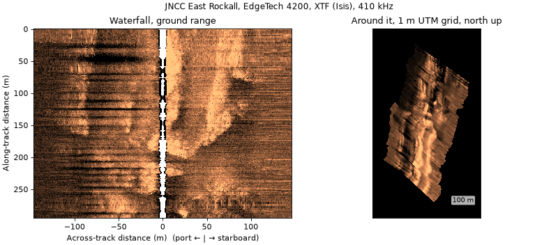
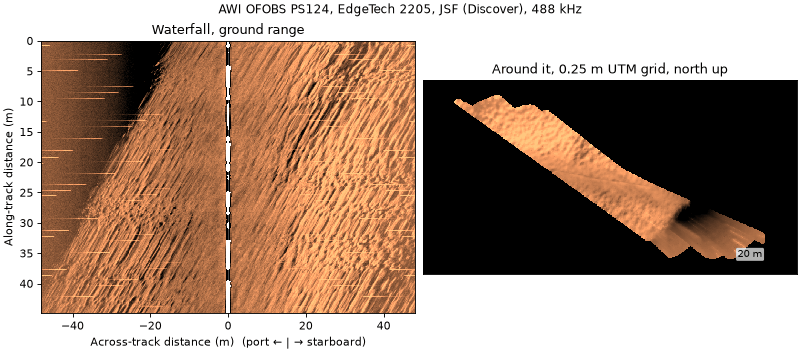
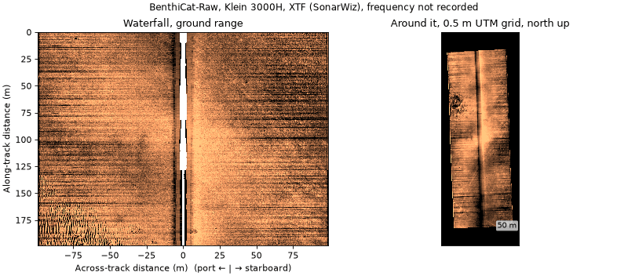

Public datasets#
A running list of openly published sidescan datasets and whether
sidescanpy reads them. Example data lists the
individual files that sidescanpy.datasets.fetch() downloads for the
examples and tests; this page lists whole archives, including ones
nothing in sidescanpy downloads yet.
Status:
reads: converted and corrected with the default chain below; the figure shows the result.
reads with caveats: reads, but the archive leaves something out or records it oddly; the notes say what.
not yet tried: raw files in a format sidescanpy reads, not yet opened.
format not supported: raw files in a format sidescanpy does not read, or images only.
Licences, sizes and file lists come from each landing page when it was checked; confirm them there before use. Data is not re-hosted here: link to the archive and cite it.
Summary#
Dataset |
Format (writer) |
Sonar |
Licence |
Status |
|---|---|---|---|---|
XTF (GeoDAS, SonarPro) |
Klein, 400 kHz |
OGL v3 |
reads with caveats |
|
XTF (SonarPro) |
Klein 3900 |
U.S. public domain |
reads |
|
JSF and XTF (Discover) |
EdgeTech, 219 + 521 kHz |
OGL v3 |
reads |
|
XTF (Isis) |
Benthos SIS-1624, 100 + 400 kHz |
OGL v3 |
reads |
|
XTF (Isis) |
Benthos SIS-1500, 200 kHz |
OGL v3 |
reads |
|
XTF (Isis) |
EdgeTech 4200, 120 + 410 kHz |
OGL v3 |
reads with caveats |
|
JSF (Discover) |
EdgeTech 2205 |
CC BY 4.0 |
reads |
|
XTF (SonarWiz) |
Klein 3000H |
CC BY 4.0 |
reads with caveats |
|
JSF (Discover) |
EdgeTech 4125, 400 + 900 kHz |
U.S. government, none stated |
not yet tried |
|
JSF |
EdgeTech 2205 |
CC BY-NC-SA 4.0 |
not yet tried |
|
JSF, nav separate |
EdgeTech 2205 |
CC BY-NC-SA 3.0 (check each) |
not yet tried |
|
EdgeTech format, probably JSF |
EdgeTech 2205 |
CC BY-NC-SA 4.0 |
not yet tried |
|
XTF |
EdgeTech, towed |
CC BY-NC-SA 3.0 |
not yet tried |
|
not listed (JSF or XTF) |
EdgeTech 4200-MP |
CC BY-NC 4.0 |
not yet tried |
|
XTF |
EdgeTech, 120 + 410 kHz, AUV |
check |
not yet tried |
|
XTF (SonarPro) |
Klein 3900 |
U.S. public domain |
not yet tried |
|
XTF |
not named |
open access, IEEE login |
not yet tried |
|
mosaics + BAG online; raw on request |
various |
U.S. public domain |
not yet tried |
|
XTF converted from HSX |
GeoSwath (interferometric) |
U.S. government |
not yet tried |
|
DAT/SON/IDX, SL2/SL3 |
recreational |
various |
format not supported |
|
PNG/JPG + labels |
various |
various |
format not supported |
Sample outputs#
Every figure below comes from one script,
docs/_scripts/public_datasets_figures.py, with the same chain and the
same layout; only the file, the format and a navigation CRS the archive
leaves unstated change. The chain:
read, navigation onto the pings, 20 s navigation smoothing (
smooth_navigation())bottom_track,tvg(library defaults),geometric(flat seabed)range_correctionfitted on the same line, which flattens the level against range that TVG leaves (a recorder’s own TVG, beam pattern)georef
Left: a ground-range waterfall one swath width long, from the stretch of the line with the steadiest positions. Right: three swath widths around it, gridded on UTM (about 300 cells across the swath, inverse-distance weighting), north up. Both in dB, copper colormap, 2 to 98 % stretch, highest frequency in the file. Nothing is tuned per dataset, so the panels show what the default chain gives, not the best each dataset can look; the examples tune the chain for several of them.
BGS London Gateway#

Provider: British Geological Survey, National Geoscience Data Centre, item 140325, https://webapps.bgs.ac.uk/services/ngdc/accessions/index.html#item140325. Acquired by the Port of London Authority and Wessex Archaeology.
Licence: Open Government Licence v3.0; “Contains data supplied by UKRI.”
Sonar, format: Klein (a Klein 3000 in 2008), 400 kHz, 50 or 75 m range; XTF written by GeoDAS (2007) and KleinXlt/SonarPro (2008).
Size, area: 804 MB of 2007 wreck lines (83 XTF over 13 wrecks) and 77 MB of 2008 lines (7 XTF over one wreck); the accession also holds 2002 and 2011 surveys. Thames Estuary, UK.
Notable: repeated passes over named wrecks, with the catalogued wreck positions in the record (
datasets.BGS_LONDON_GATEWAY_WRECKS).sidescanpy: reads with caveats. The 2007 lines store UTM 31N without saying so (
nav_crs="EPSG:32631"), record no heading, and carry the recorder’s TVG; positions jump 1 to 3 m at each GPS fix. Details in Example data.Figure:
bgs_london_gateway_dynamo_78.xtf.
USGS Grand Bay#

Provider: U.S. Geological Survey data release, doi:10.5066/P9374DKQ.
Licence: U.S. public domain.
Sonar, format: Klein 3900 (the file header says Klein 3000), pole mounted; XTF written by KleinXlt / SonarPro.
Size, area: 9.8 GB XTF zip, plus a 578 MB zip of CleanSweep mosaics (0.30 m). Grand Bay, Mississippi and Alabama, USA; shallow estuary.
Notable: a published mosaic of the same lines, for comparison (Four published chains).
sidescanpy: reads.
Figure:
usgs_grand_bay_150602205800.xtf, a short line.Cite: Locker, S.D., Forde, A.S., and Smith, C.G., 2018, Subbottom and Sidescan Sonar Data Acquired in 2015 From Grand Bay, Mississippi and Alabama: U.S. Geological Survey data release, https://doi.org/10.5066/P9374DKQ.
JNCC Wight-Barfleur Reef#

Provider: Joint Nature Conservation Committee, Raw side scan sonar data from Wight-Barfleur Reef SCI (CEND 03/13, 2013), https://www.data.gov.uk/dataset/5298a3dd-af03-4509-b806-ab9f884816ae.
Licence: Open Government Licence v3.0.
Sonar, format: EdgeTech, 219 + 521 kHz; JSF and the same pings as XTF, both written by Discover.
Size, area: 57 GB zip. English Channel, UK.
Notable: the same pings in two formats, which cross-checks the JSF and XTF readers; no recorded altitude.
sidescanpy: reads (altitude from
bottom_track).Figure:
jncc_wight_barfleur_20130321174522.jsf.
JNCC mid-Irish Sea#

Provider: JNCC, Raw sidescan sonar data from Submarine structures in the mid-Irish Sea Area of Search (CEND 11/08, 2008), https://www.data.gov.uk/dataset/4a67eeb2-3dce-40b6-96ca-66cc25eeeada.
Licence: Open Government Licence v3.0.
Sonar, format: Benthos SIS-1624, 100 + 400 kHz; XTF written by Isis 7.0.
Size, area: 7.9 GB zip. Irish Sea, UK.
Notable: records altitude and navigation, so the default chain is enough; used in Getting started.
sidescanpy: reads.
Figure:
jncc_mid_irish_sea_MIS11_0.xtf.
JNCC Solan Bank#

Provider: JNCC, Raw sidescan sonar data from Solan Bank Area of Search (CEND 11/08, 2008), https://www.data.gov.uk/dataset/5773e015-c014-416c-aa43-a0397a8fd9e9, and Processed sidescan mosaics from Solan Bank Area of Search, https://www.data.gov.uk/dataset/6c1e65a9-d45d-443e-b563-f723ac266ac4.
Licence: Open Government Licence v3.0.
Sonar, format: Benthos SIS-1500 (the cruise metadata says SIS-1624), 200 kHz; XTF written by Isis.
Size, area: 7.5 GB raw zip, 1.2 GB of per-line GeoTIFFs (0.5 m). North of Scotland, UK.
Notable: an Isis/TritonMap GeoTIFF for each line.
sidescanpy: reads. Positions are the ship’s and no layback is recorded, so the grid sits along track from the towfish (about 340 m on this line).
Figure:
jncc_solan_bank_SB04_10.xtf.
JNCC East Rockall Bank#

Provider: JNCC, Raw side scan data from Anton Dohrn and East Rockall Bank (MV Franklin, 2009), https://www.data.gov.uk/dataset/09203cee-92dd-486b-8838-a525507765fd, and Processed side scan data from Anton Dohrn and East Rockall Bank, https://www.data.gov.uk/dataset/efc2ea5f-c376-4904-b7fb-34cdde65744e.
Licence: Open Government Licence v3.0.
Sonar, format: EdgeTech 4200 (header; other metadata says 2200-MP), 120 + 410 kHz; XTF written by Isis 7.2.
Size, area: 2.0 GB raw zip (23 lines), 688 MB of per-line GeoTIFFs (0.4 m). Rockall Bank, NE Atlantic.
Notable: an Isis/TritonMap GeoTIFF for each line.
sidescanpy: reads with caveats. Navigation is UTM 29N without saying so (
nav_crs="EPSG:32629"). Positions on this line jump by up to 30 m between pings in places, which the default chain does not remove; the grid shows it.Figure:
jncc_east_rockall_ER_C1_SS_001_6.xtf.
AWI OFOBS, PS124#

Provider: PANGAEA, doi:10.1594/PANGAEA.939172 (raw), doi:10.1594/PANGAEA.939087 (CARIS mosaics), series doi:10.1594/PANGAEA.939322.
Licence: CC BY 4.0.
Sonar, format: EdgeTech 2205 on the towed OFOBS frame; JSF from Discover Bathymetric (“binned”).
Size, area: 60 JSF files of about 51 MB for this profile, each on its own URL. Southern Weddell Sea, Antarctica, 2021.
Notable: USBL positions, swath bathymetry from the same sonar, and a 0.10 m CARIS intensity mosaic.
sidescanpy: reads.
Figure:
awi_ofobs_ps124_20210217004957.jsf.Cite: Hehemann, L., Purser, A., Boehringer, L., Werner, E., Wenzhöfer, F. (2021): Side scan sonar and swath bathymetry collected along OFOBS profiles PS124_26-7 during POLARSTERN cruise PS124, binned. PANGAEA, https://doi.org/10.1594/PANGAEA.939172.
BenthiCat-Raw#

Provider: University of Girona, Harvard Dataverse, doi:10.7910/DVN/UMABNT; collection https://dataverse.harvard.edu/dataverse/benthicat.
Licence: CC BY 4.0.
Sonar, format: Klein 3000H towfish; XTF exported by SonarWiz, low frequency channels only (
PORTLF,STBDLF), 1024 samples, about 100 m a side.Size, area: 370 GB in all. The sidescan is one 43-part 7z of about 110 GB (about 4600 XTF, 246 GB unpacked), so every part is needed before extracting. Catalan coast, Spain, 2022, 10 to 50 m deep.
Notable: overlapping lines in 22 sectors, R2Sonic 2022 multibeam (xyz and 1 m DEMs) over part of the area, per-sector sidescan mosaics, habitat polygons and AUV camera recordings. Companion image sets: BenthiCat-SSS-CAM (doi:10.7910/DVN/VZD5S6) and BenthiCat-SSS Pre-training (doi:10.7910/DVN/2VCN7Y).
sidescanpy: reads with caveats. The files record 0 Hz, so the default TVG has no absorption term (pass
absorption_db_per_m), and a speed of 0. Positions are in the ship fields and no layback is recorded; the release does not say whether they are the towfish’s. Not registered indatasets.fetch: the archive cannot be read one file at a time.Figure:
N01/N01_05_220731124500_xtf-CH12.xtf.Cite: Rajani, H. (2026). BenthiCat - Raw. Harvard Dataverse, V1.1, https://doi.org/10.7910/DVN/UMABNT; and Rajani, H., et al. (2025). BenthiCat: An opti-acoustic dataset for advancing benthic classification and habitat mapping. arXiv:2510.04876.
Not yet tried#
Raw data in formats sidescanpy reads, not yet opened.
NPS Gateway National Recreation Area, 2014–2015. EdgeTech 4125, 400 + 900 kHz, bow mounted, JSF (Discover); Sandy Hook, New Jersey, USA. NPS IRMA Profile 2278770, catalog.data.gov. No licence stated (U.S. government work).
MGDS, REMUS 600, FK170825 (Hawaii, 2017). EdgeTech 2205 JSF. doi:10.1594/IEDA/324457, CC BY-NC-SA 4.0.
MGDS, MBARI Mapping AUV. EdgeTech 2205 JSF without merged navigation (MB-System format 132), with multibeam from the same vehicle in sibling data sets. For example Escanaba Trough 2016 (doi:10.26022/IEDA/330304), Cascadia 2021 (doi:10.60521/332830), Beaufort Sea 2022 (doi:10.60521/331736). CC BY-NC-SA 3.0 for Escanaba Trough; check each. Download through the MGDS web interface.
MGDS, Sentry, FK171110 (2017). EdgeTech 2205 on the Sentry AUV, “EdgeTech Sidescan format” (probably JSF). doi:10.60521/331116, CC BY-NC-SA 4.0.
MGDS, NBP1001 (Larsen Ice Shelf, 2010). Towed EdgeTech, XTF. doi:10.1594/IEDA/316265, CC BY-NC-SA 3.0.
PANGAEA, R/V Heincke HE501 (German Bight). EdgeTech 4200-MP. doi:10.1594/PANGAEA.907463, CC BY-NC 4.0. One 36.5 GB tar; the format inside is not listed.
Geoscience Australia, Caswell Sub-basin GA0346 (2014). EdgeTech 120 + 410 kHz on an AUV, XTF. https://pid.geoscience.gov.au/dataset/ga/84545; licence to check (Geoscience Australia usually releases under CC BY 4.0).
USGS Gulf Islands, 10CCT03 (2010), Data Series 671. Klein 3900, XTF (SonarPro); sister releases DS 577 (Petit Bois) and DS 291 (Siesta Key). https://pubs.usgs.gov/ds/671/. U.S. public domain. Whether each release has raw XTF or only mosaics is to check.
AURORA, NOC Autosub 6000, JC125 M87 (Haig Fras, 2015). XTF sidescan with multibeam, camera and navigation from the same AUV. IEEE DataPort doi:10.21227/nnms-te61 (about 200 GB; open access, needs a free IEEE account). Cite Bernardi et al. (2022), IJRR 41(5), doi:10.1177/02783649221078612.
NOAA NOS hydrographic surveys. Each survey with sidescan has a sidescan mosaic GeoTIFF (
SSSAB) and BAG bathymetry online (https://data.ngdc.noaa.gov/platforms/ocean/nos/coast/, e.g. F00825, H13100). The raw XTF is archived but must be requested from NOAA NCEI. U.S. public domain.
Format not supported#
NOAA OCM Hudson River backscatter (2009). GeoSwath interferometric data converted HSX to XTF. InPort 47922. XTF from an interferometric system; not yet tried.
HYPACK HSX. The second most common format in NOAA NCEI’s sidescan holdings; not read.
Humminbird DAT/SON/IDX (e.g. USFWS Chena River 2022 on data.gov; PING-Mapper reads it) and Lowrance SL2/SL3 (sonarlight’s example files). Recreational sonars; not read.
Image datasets#
Labelled images cut from sidescan by each group’s own processing, not raw pings, so there is nothing for a reader to open. Useful to compare with what Targets and datasets exports.
Dataset |
Content |
Host, licence |
|---|---|---|
AI4Shipwrecks (Sethuraman et al., IJRR 2025) |
286 images, 28 wrecks, pixel masks; EdgeTech 2205 on an AUV |
University of Michigan Deep Blue |
SSS for mine detection (Data in Brief 2024) |
1170 images, YOLO labels; Gavia AUV |
figshare 24574879, CC BY 4.0 |
SWDD (2024) |
7904 images, COCO; Klein 3500 on an AUV |
Zenodo 13692547, CC BY 4.0 |
BenthiCat-SSS Pre-training |
about 950k 384 × 384 tiles, 36k masks |
Harvard Dataverse doi:10.7910/DVN/2VCN7Y |
SeabedObjects-KLSG / KLSG-II |
ships, aircraft, seafloor |
GitHub |
SCTD |
ships, aircraft, people |
GitHub |
The REMARO OpenSonarDatasets list and Gomes et al. (2025), Sonar Image Datasets: A Comprehensive Survey (arXiv:2510.03353), track more.
Adding a dataset#
Open an issue with the landing page, licence, sonar and format. A
dataset whose licence allows it and whose archive can be read one file
at a time can be added to sidescanpy.datasets (see
Example data). To redo the figures:
PYTHONPATH="" uv run --all-extras python -I docs/_scripts/public_datasets_figures.py \
--benthicat /path/to/N01_05_220731124500_xtf-CH12.xtf